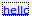

from sikuli import *
from open_new_project import open_new_project
from test_helper import TestHelper
def restart_flex():
helper = TestHelper("restart_flex")
helper.write("restarting flex")
helper.Type("t", KeyModifier.CTRL | KeyModifier.ALT, time=5)
helper.Type("sudo /home/vagrant/Integration-Testing-Framework/sikuli/examples/restart_flex.sh && exit" + Key.ENTER)
# If the 'hello' project shows up as the last opened project,
# just press enter
if helper.Exists(Pattern().similar(0.90), "'hello' project not showing as last opened, " +
"trying to open via 'Open a project'", give_up=False):
helper.write("Success")
helper.Type(Key.ENTER, time=20)
# If not, try to find it in the 'Open project screen'
else:
helper.Click( , "Couldn't find 'Open a project' button")
hello = helper.Find(Pattern(
, "Couldn't find 'Open a project' button")
hello = helper.Find(Pattern( ).similar(0.90), "'hello' project not found in the 'Open Project'" +
"screen, trying to create a new project", give_up=False)
if hello:
helper.DoubleClick(hello, "Found 'hello' but didn't manage to click it, wat!?",
time=20)
helper.write("Success")
# As a last resort, try to create the project (this shouldn't happen
# and will probably not work: green screen if hello already exists.)
else:
helper.write_fail("'hello' project not found, quitting.")
exit()
wait(2)
).similar(0.90), "'hello' project not found in the 'Open Project'" +
"screen, trying to create a new project", give_up=False)
if hello:
helper.DoubleClick(hello, "Found 'hello' but didn't manage to click it, wat!?",
time=20)
helper.write("Success")
# As a last resort, try to create the project (this shouldn't happen
# and will probably not work: green screen if hello already exists.)
else:
helper.write_fail("'hello' project not found, quitting.")
exit()
wait(2)